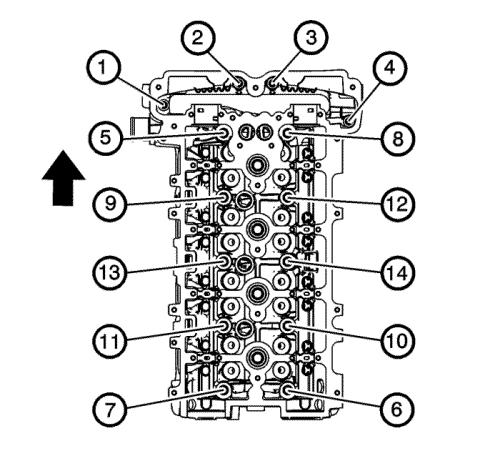
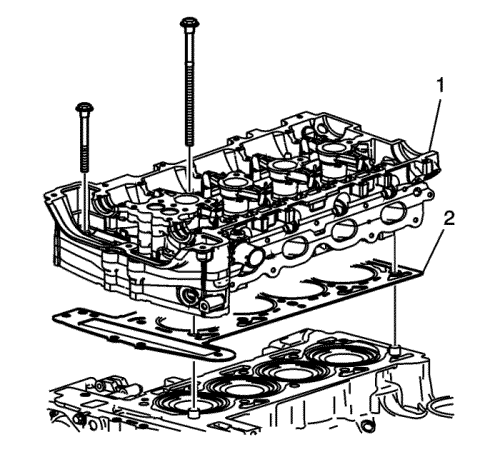

Retirada de la culata — LAP, LAT, LE5, LE8, LE9
Herramientas especiales
EN-38188 Juego de herramienta de extracción de tornillos de culata rotos
Si desea informarse sobre herramientas regionales equivalentes, consultar Herramientas especiales .

- Extraiga la culata hasta los pernos de bloque por orden.
Deseche los tornillos.

Atención: Para evitar que durante la extracción de la culata se dañen las válvulas e inyectores, disponga la culata sobre bloques.
- Retire la culata (1).
- Retire la junta de la culta de cilindro (2).
- Limpie todas las superficies de la junta.
- Utilice los siguientes procedimientos para limpiar la culata y las superficies del bloque motor:
| • | Utilice un rascador de cuchillas para juntas para limpiar las superficies de junta del bloque motor y la culata. No arañe o rasque ninguna superficie. |
| | Nota: No utilice otro método o técnica para limpiar las superficies de junta. |
| • | Utilice una cuchilla nueva para cada culata y bloque motor. |
| | Nota: Tenga cuidado de no rascar o rayar las superficies de junta. No arañe o raspe las superficies de las cámaras de combustión. Es importante el tacto de la superficie de junta, no el aspecto. Una vez eliminado todo el material de junta, quedarán incisiones de la junta en la culata. Estas pequeñas incisiones se rellenarán con la nueva junta. |
| • | Sujete la cuchilla tan paralela a la superficie de junta como pueda. |
Nota: No utilice un macho de roscar para limpiar los orificios de perno de la culata.
- Limpie la suciedad y lubricación antigua de los orificios de perno.
- Limpie los orificios de perno con un cepillo de cerdas de nylon.
Advertencia : Utilice gafas de seguridad para evitar lesiones cuando emplee aire comprimido o disolventes de limpieza. Pueden producirse daños personales si se inhalan vapores o se expone la piel a productos químicos.
- Al limpiar los orificios de perno de culata, utilice un disolvente líquido comercial en spray y aire comprimido de una pistola de inyección con punta para alcanzar la parte inferior de los orificios.
- Extraiga cualquier tornillo largo de culata que esté roto con el kit extractor EN-38188.
| © Copyright Chevrolet Europe. All rights reserved |